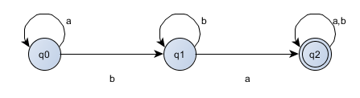
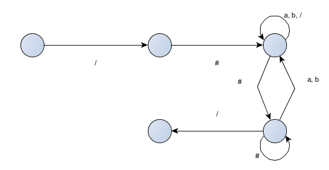

Solutions for Computation
Table of Contents
- 1. chapter 1
- 1.1. M1 and M2
- 1.2. formal description
- 1.3. diagram of DFA
- 1.4. intersection of two languages
- 1.5. complement of language
- 1.6. diagram of DFAs
- 1.7. diagram of NFAs with specified states
- 1.8. recognize union of languages
- 1.9. recognize concatenation of languages
- 1.10. recognize start of languages
- 1.11. NFA convertion
- 1.12. DFA with five states
- 1.13. 1s separated by odd symbols
- 1.14. judgement about closure of language under complement
- 1.15. closure of RL under the star operation
- 1.16. convert NFA to DFA
- 1.17. NFA recognizing (01 U 001 U 010)*
- 1.18. Regular expression generating the languages
- 1.19. conver regular expression to NFA
- 1.20. give examples of regular expressions
- 1.21. automata to regular expressions
- 1.22. comment recognizer
- 1.23. Prove that B = B+ iff BB belongs to B
- 1.24. Finite State Transducer(FST)
- 1.25. FST formal definition
- 1.26. using FST to give definition
- 1.27. using FST to make diagram of specific FST
- 1.28. convert regular expression to NFA
1 chapter 1
1.1 M1 and M2
- q1
- M1: {q2}, M2: {q4}
- M1: q1 -> q2 -> q3 -> q1 -> q1, M2: q1 -> q1 -> q1 -> q2 -> q4
- M1: yes, M2: no
- M1: no, M2: yes
1.2 formal description
- {Q={q1, q2, q3}, E={a, b}, q1, {q2}, transition}
state a b q1 q2 q1 q2 q3 q3 q3 q2 q1 - {Q={q1, q2, q3, q4}, E={a, b}, q1, {q1, q4}, transition}
state a b q1 q1 q2 q2 q3 q4 q3 q2 q1 q4 q3 q4
1.3 diagram of DFA
1.4 intersection of two languages
1.5 complement of language

- 


1.6 diagram of DFAs


1.7 diagram of NFAs with specified states


1.8 recognize union of languages

1.9 recognize concatenation of languages

1.10 recognize start of languages


1.11 NFA convertion
Question: Prove that every NFA can be converted to an equivalent one that has a single accept state
Answer: Asume the NFA is N = {Q, Σ, δ, q0, F}, F is the set of final states. Thus, we can construct a new NFA N1 = {Q, Σ, δ1, q0, F1}, the represent is as follows:
- F1 = {qf}
- δ1(q, a) = δ(q, a), q belongs to Q and q not belong to F
- δ1(q, ε) = δ(q, ε) U {qf}, q belongs to F, qf belongs to F1
Now, we can prove it in bidirection:
==> w is any string accepted by NFA N, so we can conclude that δ(w, a) belongs to F. according the transition function above, w is accepted by NFA N1.
<== w is any string accepted by NFA N1, and w = wε, according to formula δ1(q, ε) = qf, q = δ1(q0, w) = δ(q0, w) belongs to F, so w is also accepted by NFA N.
1.12 DFA with five states
It can be descripted by the following: D = {odd b's followed by even a's}, now the answer is not correct, ignore it!
Answer has been fixed, now it's right.

1.13 1s separated by odd symbols
First, we should construct a NFA, then convert it to a DFA. this DFA has 7 states, besides, the last three final states with all other states pointing at them and no one point out, so we can combine them into one final state.
1.14 judgement about closure of language under complement
- Show that if M is a DFA that recognizes language B, swapping the accept
and nonaccept states in M yields a new DFA recognizing the complement of
B. Conclude that the class of regular languages is closed under complemen
Answer: Assume any DFA M = {Q, Σ, δ, q0, F}, after swapping states, we get Mc = {Q, Σ, δ, q0, Fc}, Fc = {q | q ∈ Q - F}. for any w ∈ Σ* and w ∉ F, it will falls in the states of Q - F = Fc, thus, we can conclude that Mc accepts the complement of language LM.
According the conclusion above, any DFA and it's complement are DFAs, all the languages accepted by DFAs are regular languages, so regular languages are closed under complement.
- Show by giving an example that if M is an NFA that recognizes language
C, swapping the accept and nonaccept states in M doesn鈥檛 necessarily yield
a new NFA that recognizes the complement of C. Is the class of languages
recognized by NFAs closed under complement? Explain your answer.
Origin NFA: accepting language containing at least one 0;
NFA after swapping: accepting language containing (0+1)*
Is the class of languages recognized by NFAs closed under complement? Answer: Yes, any NFA is also a NFA after swapping states, because every NFA has an equivalent DFA, so they are all regular languages, thus, languages are closed under complement.
1.15 closure of RL under the star operation
The origin accepts the language L = {w | w has (2+3n) 0's and n ∈ N}. using the construction method proposed by 1.15, it will accepts w = 000 ∉ L. So, it fails to prove the Theorem 1.49.
1.16 convert NFA to DFA
a.
b.
1.16.1 DONE write a program to convert NFA to DFA
1.17 NFA recognizing (01 U 001 U 010)*
a.
b.
1.18 Regular expression generating the languages
1. ^1(0|1)*0$
2. 0*10*10*1[01]*
3. [01]*0101[01]*
4. [01]{2}1[01]*
5. 0([01]{2})*|1([01]{2})*[01]
6.
7. [01]{0, 5}
8.
9. (1[01])+
10. 000*|1000*|0100*|000*10*
11. 0?
12. (00)* | 0*10*10*
13. (?!.*)
14. [01]+
1.19 conver regular expression to NFA
a.
b.
c.
1.20 give examples of regular expressions
a. a*b* | ab / aab | ba / bba b. a(ab)*b | ab / aabb | a / b c. a* U b* | a / b | ab / ba d. (aaa)* | aaa / aaaaaa | b / ba e. (a+b)*a(a+b)*b(a+b)*a(a+b)* | aba / abab | ab / ba f. aba U bab | aba / bab | aab / b g. (\epsilon U a )b | b / ab | aa / bb h. (a U ab U bb)(a+b)* | a / ab | ba / bab
1.21 automata to regular expressions
1.22 comment recognizer
a. 
b. regular expression:
/#(a+b+/+#(a+b))*#/
1.23 Prove that B = B+ iff BB belongs to B
=> if B = B+, then language constructed by this grammar is L(B) = L(B + BB + BBB + …) = L(B) + L(BB) + …, then BB belongs to B;
<= if BB belongs to B, then BBB belongs to BB, so BBB belongs to B. Thus by induction, (B)n belongs to B(n>=1). so B = B+.
1.24 Finite State Transducer(FST)
a. T1: 011 -> 000 b. T1: 211 -> 111 c. T1: 121 -> 011 d. T1: 0202 -> 0101 e. T2: b -> 1 f. T2: bbab -> 1111 g. T2: bbbbbb -> 110110 h. T2: e -> e
1.25 FST formal definition
FST is a 5-tuple whitch is composed of {Q, Σ, δ, q0, Γ}
Q: the states set of FST \Sigma: the inputs set of FST \delta : Q X \Sigma -> Q X \Gamma q_0: the start state of FST \Gamma: the outputs set of FST
1.26 using FST to give definition
- T1 = {Q, Σ, δ, q0, Γ}
Q: {q1, q2}
\Sigma: {0, 1, 2}
\Gamma: {0, 1}
\delta: Q X \Sigma -> Q X \Gamma
q0: q1
- T2 = {Q, Σ, δ, q0, Γ}
Q: {q1, q2, q3}
\Sigma: {a, b}
\Gamma: {0, 1}
\delta: Q X \Sigma -> Q X \Gamma
q0: q1
1.27 using FST to make diagram of specific FST
1.28 convert regular expression to NFA
a. a(abb)*∪ b
b. a+ ∪ (ab)+
c. (a∪ b+)a+b+